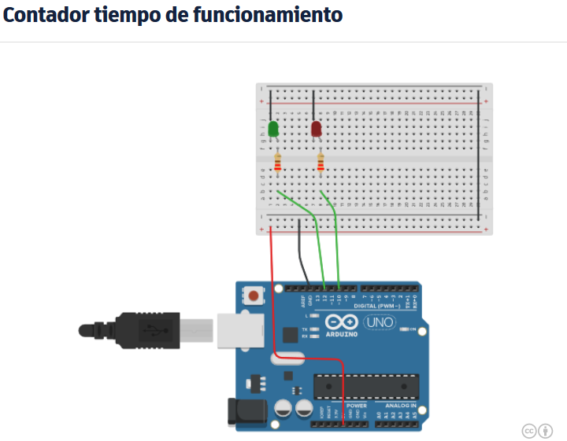

CONTADOR TIEMPO DE FUNCIONAMIENTO.

- Contador de tiempo con la funcion milis()
/*Intermitente Led verde
cada 10 segundos
mediante contador de tiempo de
funcionamiento
*/
int
T_Transcurrido=0; //temporizacion
int T_comienzo=0;
int segundos=0;
int minutos=0;
int ledverde=12;
int ledrojo=10;
int led;//comprueba el
estado del led rojo
void setup(){
pinMode(ledverde,OUTPUT);
pinMode(ledrojo,OUTPUT);
Serial.begin(9600);
}
void loop(){
led=digitalRead(ledrojo);//Carga el valor de la salida del led
rojo en la variable led
//contador de
segundos y minutos desde el comienzo del programa
if (T_comienzo==0)
T_comienzo=millis();//cuando el T_comienzo vale 0 cargo el tiempo.
T_Transcurrido=
millis()-T_comienzo;//mido el tiempo entre el actual y cuando el
comienzo
// si pasa un segundo incremento un segundo, y a los 60s incremento un
minuto
if
(T_Transcurrido>1000){
T_Transcurrido=0; //reinicializo
T_comienzo=0;
segundos++;// cuento el tiempo
if (segundos==60){
minutos++;
segundos=0;
}
}
//utilizacion del
temporizador para imprimir y para el intermitente de 1 segundo
if (T_comienzo==0){
//T_comienzo vale 0 cada segundo, aprovecho para imprimir en pantalla
Serial.print ("minutos de
funcionamieto");
Serial.println(minutos);
Serial.print("segundo de
funcionamiento ");
Serial.println(segundos);
//otra forma de hacer un cambio de estado, ya sabemos que la mejor es
estado=!estado
//INTERMITENTE ROJO DE 1
SEGUNDO
if ( led ==1 )
digitalWrite(ledrojo,LOW);
else digitalWrite
(ledrojo,HIGH);
Serial.println(led);
}
//realizar el
intermitente cada 10 segundos con el temporizador
if (segundos==0)
digitalWrite(ledverde,HIGH);
if
(segundos==10)digitalWrite(ledverde,LOW);
if (segundos==20)
digitalWrite(ledverde,HIGH);
if
(segundos==30)digitalWrite(ledverde,LOW);
if (segundos==40)
digitalWrite(ledverde,HIGH);
if
(segundos==50)digitalWrite(ledverde,LOW);
}//fin de programa